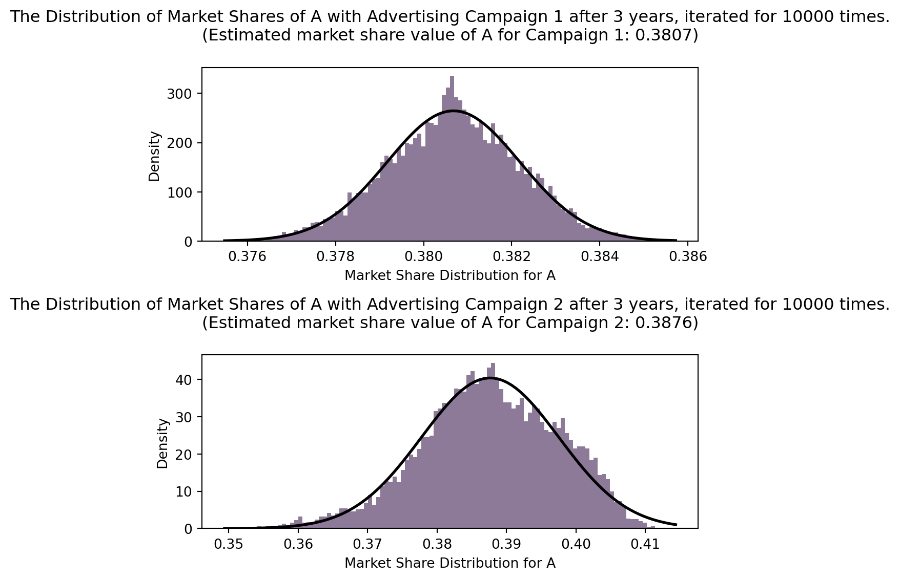
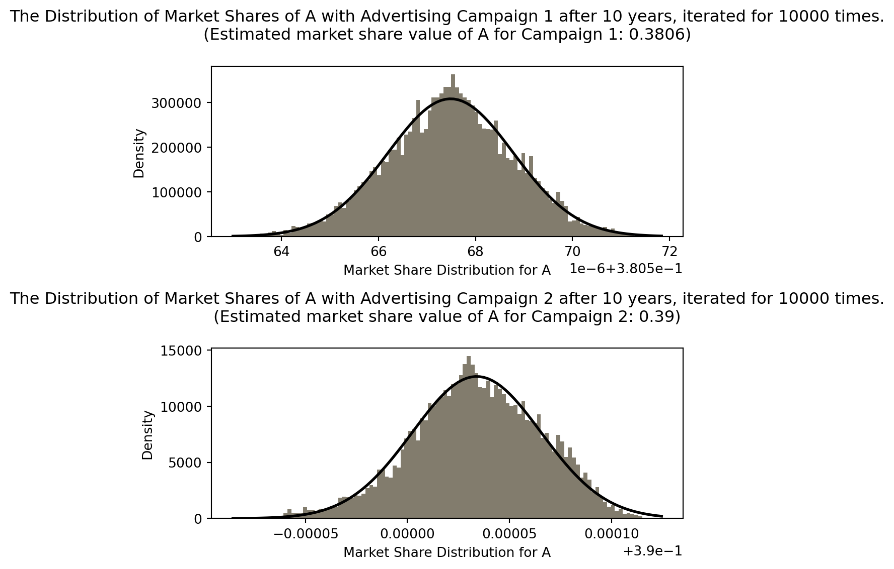
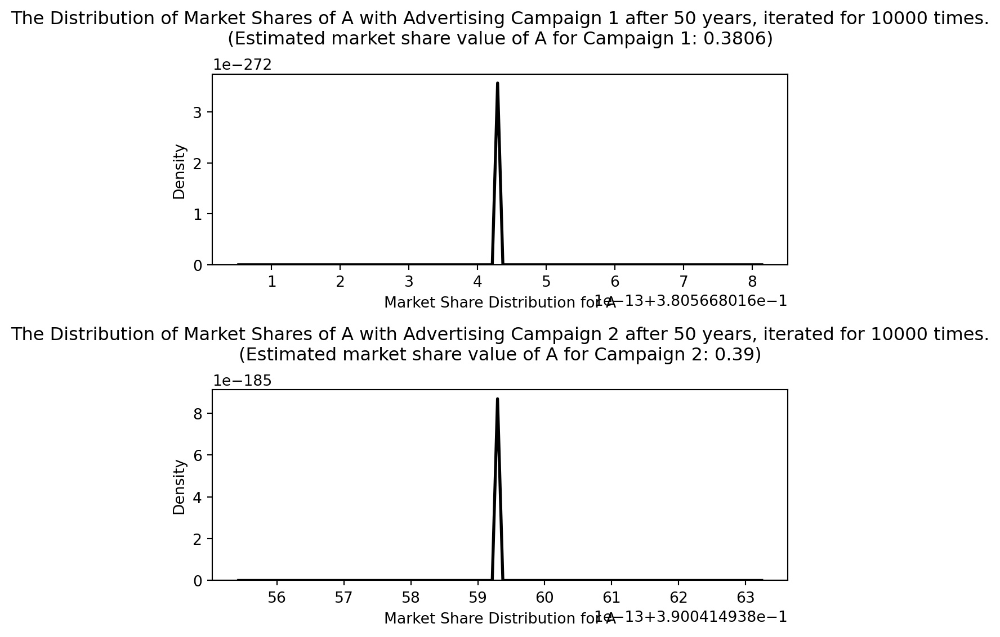
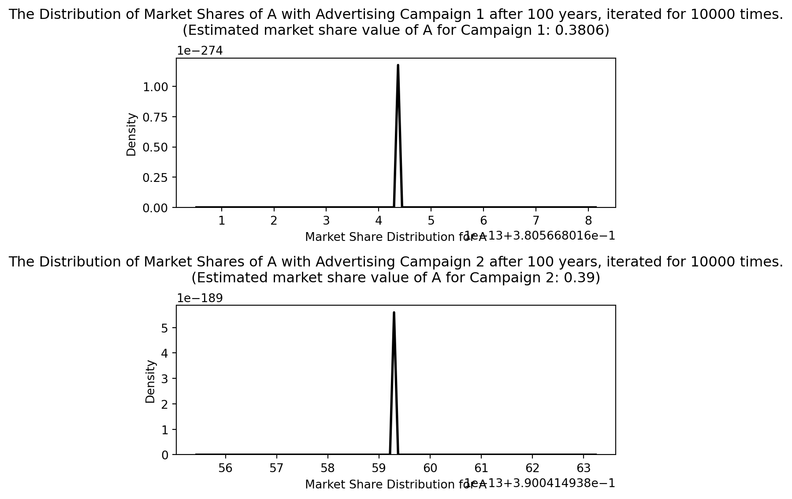
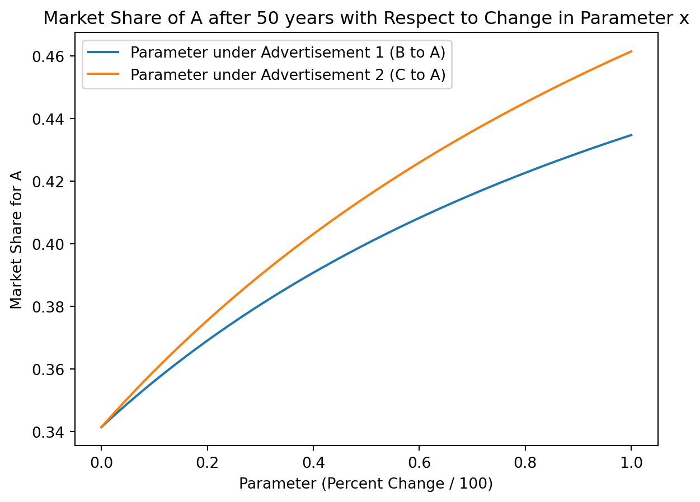

import networkx as nx
import matplotlib.pyplot as plt
import scipy
import numpy as np
from scipy.stats import norm#Markov Chain
The transition matrix under this context will be
\[ \begin{bmatrix} 0.5 & 0.2 & 0.3\\ 0.2 & 0.6 & 0.1\\ 0.3 & 0.2 & 0.6\\ \end{bmatrix} \] .
Now, let us put this transition matrix into code. We will set the initial state of the system to be \[ \begin{bmatrix} \frac{1}{3}\\ \frac{1}{3}\\ \frac{1}{3} \end{bmatrix} \]
to denote all three companies having equal shares of the market.
# Code in this transition matrix and the initial state (Equal shares of customers)
markovTransition = np.array([[0.5, 0.2, 0.3], [0.2, 0.6, 0.1], [0.3, 0.2, 0.6]])
initialState = np.array([[1/3], [1/3], [1/3]])
iteration = initialState
# Test three iterations
for i in range(3):
iteration = markovTransition.dot(iteration)
print(f"{i + 1} Year Later: \n Percent of customer shares for A: {np.round(iteration[0, 0] * 100, decimals=2)}% \n Percent of customer shares for B: {np.round(iteration[1, 0] * 100, decimals=2)}% \n Percent of customer shares for C: {np.round(iteration[2, 0] * 100, decimals=2)}%")1 Year Later:
Percent of customer shares for A: 33.33%
Percent of customer shares for B: 30.0%
Percent of customer shares for C: 36.67%
2 Year Later:
Percent of customer shares for A: 33.67%
Percent of customer shares for B: 28.33%
Percent of customer shares for C: 38.0%
3 Year Later:
Percent of customer shares for A: 33.9%
Percent of customer shares for B: 27.53%
Percent of customer shares for C: 38.57%We can see from the results that B begins to lose shares of the market, C gains a considerable amount of shares (around 2%), while A gains small amount of shares (around 0.6%) in three years.
Now, let us test the effects of the two advertising campaigns.
Advertising Campaign 1 convinces 20% of customers who would have to stay in B to switch to A. This can be represented in the modified transition matrix: \[ \begin{bmatrix} 0.5 & 0.32 & 0.3\\ 0.2 & 0.48 & 0.1\\ 0.3 & 0.2 & 0.6\\ \end{bmatrix} \]
Advertising Campaign 2 convinces 20% of customers who would have to stay in C to switch to A. This can be represented in the modified transition matrix:
\[ \begin{bmatrix} 0.5 & 0.2 & 0.42\\ 0.2 & 0.6 & 0.1\\ 0.3 & 0.2 & 0.48\\ \end{bmatrix} \]
To view the effectiveness of the campaigns, I will iterate these markov chains over times and create a Gaussian Fit.
# Code in the advertising campaign transition matrices.
transition1 = np.array([[0.5, 0.32, 0.3], [0.2, 0.48, 0.1], [0.3, 0.2, 0.6]])
transition2 = np.array([[0.5, 0.2, 0.42], [0.2, 0.6, 0.1], [0.3, 0.2, 0.48]])
# Let us iterate over random distribution vectors for the two transition matrices
# to view the resulting market shares after 3 years, 50 years, and 100 years.
np.random.seed(10)
runs = 10000
# I am defining a function that takes in the two transition matrices and the
# number of years to iterate and outputs Gaussian fits for the shares for A
def advertisingGaussian(runs, years, transitionMatrix1, transitionMatrix2):
resultForAFrom1 = []
resultForAFrom2 = []
for run in range(runs):
# We do experiment a total of variable "runs" times.
# Create random initial distribution vector for the intial market share.
mold = np.random.random((3,))
initialState = mold / mold.sum()
state = initialState
# Now we do the actual iteration for the two matrices and append the results.
for year in range(years):
state = transition1.dot(state)
resultForAFrom1.append(state[0])
state = initialState
for year in range(years):
state = transition2.dot(state)
resultForAFrom2.append(state[0])
# Now we can fit the two sets of data for the market share of A
fig, axs = plt.subplots(2, 1, figsize=(6, 6))
# Determine the random color of the histograms
randomColorNumber = np.random.rand(3,)
# Fitting the 1 results
mu1, sigma1 = norm.fit(resultForAFrom1)
# Plotting the advertising campaign 1 results
axs[0].hist(resultForAFrom1, bins=100, density=True, alpha=0.7, color=randomColorNumber)
axs[0].set_title(f'The Distribution of Market Shares of A with Advertising Campaign 1 after {years} years, iterated for {runs} times.\n(Estimated market share value of A for Campaign 1: {np.round(mu1, decimals=4)})', pad=20)
axs[0].set_xlabel('Market Share Distribution for A')
axs[0].set_ylabel('Density')
xmin1, xmax1 = axs[0].get_xlim()
x1 = np.linspace(xmin1, xmax1, 100)
p1 = norm.pdf(x1, mu1, sigma1)
axs[0].plot(x1, p1, 'k', linewidth=2, label='Gaussian Fit')
# Fitting the 2 results
mu2, sigma2 = norm.fit(resultForAFrom2)
# Plotting the advertising campaign 2 results
axs[1].hist(resultForAFrom2, bins=100, density=True, alpha=0.7, color=randomColorNumber)
axs[1].set_title(f'The Distribution of Market Shares of A with Advertising Campaign 2 after {years} years, iterated for {runs} times.\n(Estimated market share value of A for Campaign 2: {np.round(mu2, decimals=4)})', pad=20)
axs[1].set_xlabel('Market Share Distribution for A')
axs[1].set_ylabel('Density')
xmin2, xmax2 = axs[1].get_xlim()
x2 = np.linspace(xmin2, xmax2, 100)
p2 = norm.pdf(x2, mu2, sigma2)
axs[1].plot(x2, p2, 'k', linewidth=2, label='Gaussian Fit')
# Showing the plot
plt.tight_layout()
plt.show()
# Now call the function
advertisingGaussian(runs, 3, transition1, transition2)
print("\n")
advertisingGaussian(runs, 10, transition1, transition2)
print("\n")
advertisingGaussian(runs, 50, transition1, transition2)
print("\n")
advertisingGaussian(runs, 100, transition1, transition2)

/Users/kendra/Library/Python/3.8/lib/python/site-packages/numpy/lib/histograms.py:883: RuntimeWarning: divide by zero encountered in divide
return n/db/n.sum(), bin_edges
/Users/kendra/Library/Python/3.8/lib/python/site-packages/numpy/lib/histograms.py:883: RuntimeWarning: invalid value encountered in divide
return n/db/n.sum(), bin_edges

Let us analyze these results. Each pair of histogram denotes the distribution of the market shares for A after some years. The estimated market share values after the set amount of years is denoted under the title. This estimated value is the mu parameter for the Gaussian fit, denoting the value with the greatest probabiltiy distribution.
For Advertising Campaign 1, we see that for 1000 random initial distributions of market shares will tend with each iteration towards a stationary state of 0.38 for the market share of A. This suggests that Advertising Campaign 1 will allow A to stabilize at 0.3806 marketshares. This seems to be a very good strategy.
For Advertising Campaign 2, we can see that the most probable market share distribution for also increases. With long iterations under numerous random intial states, A seems to always achieve the stationary state of 0.39 for its market share.
Even after three years, markov simulation suggests that Advertising Campaign 2 performs better than Advertising Campaign 1, as the market share of A under Advertising Campaign 2 is bigger than the market share of A under Advertising Campaign 1. The later iterations also suggests the same thing. Therefore, my model suggests that Advertising Campaign 2 is a more effective choice both for long term and short term increase in market share for A.
It is important to note the limitations within this model. First, it simplifies the dynamics of the market. By iterating the static transition matrices over long periods of time, we are assuming that the market does not change. In other words, company B and company C are doing nothing to regain their lost customers. After all, it is quite unreasonable to assume that things will always stay the same in 100 years. The effectiveness of the advertising campaign also can change, which is not reflected in the static transition matrices. Therefore, this model may be effect in approximating the effects of the advertising campaigns for a very short period of iteration before competitors B and C have a chance to react or implement their own strategies.
Revision: In addition, by looking at the initial transition matrices:
\[ \begin{bmatrix} 0.5 & 0.32 & 0.3\\ 0.2 & 0.48 & 0.1\\ 0.3 & 0.2 & 0.6\\ \end{bmatrix} \]
\[ \begin{bmatrix} 0.5 & 0.2 & 0.42\\ 0.2 & 0.6 & 0.1\\ 0.3 & 0.2 & 0.48\\ \end{bmatrix} \]
We can see that every iteration, A is obtaining the same percent of customers from B and C, in the first advertisement matrix, C is obtaining more customers than B. This allows C to stay competitive with A, competing for the shares of B, as opposed to the second advertisement matrix, which makes C less competitive, allowing for A to dominate more equally to A and B.
It is also worth noting the issue with the histogram. It seems like after 50 years, the stationary state is almost reached despite random initial states, resulting in all possible data contributing to one box of the histogram. I do not know exactly how I should fix this though. Perhaps I should stop after 20 years.
Now, perhaps we wish to go a step further and analyze how much of an effect gaining shares from B or C will have on the long term share of A. Then, we can simply construct functions of A market share with respect to the gaining of the market share of B or C.
# The variable parameter will be a number between 0 and 1, denoting up till
# 100% of the customer that was suppose to remain with B going to A
# Iterations will control how many years passes.
def functionB(parameter, iterations, initialState):
change = parameter * 0.4
transitionMatrix = np.array([[0.5, 0.2 + change, 0.3], [0.2, 0.6 - change, 0.1], [0.3, 0.2, 0.6]])
# We will start with the assumption for equal shares.
for year in range(iterations):
initialState = transitionMatrix.dot(initialState)
return initialState[0]
def functionC(parameter, iterations, initialState):
change = parameter * 0.4
transitionMatrix = np.array([[0.5, 0.2, 0.3 + change], [0.2, 0.6, 0.1], [0.3, 0.2, 0.6 - change]])
# We will start with the assumption for equal shares
for year in range(iterations):
initialState = transitionMatrix.dot(initialState)
return initialState[0]
# Setting the initial state to be all companies having equal shares
initialState = np.ones((3,1)) / 3
# Readying the plot
xValues = np.linspace(0,1, num=101)
BValues = []
CValues = []
for x in xValues:
BValues.append(functionB(x, 50, initialState))
CValues.append(functionC(x, 50, initialState))
# Plotting
plt.title("Market Share of A after 50 years with Respect to Change in Parameter x")
plt.plot(xValues, BValues, label="Parameter under Advertisement 1 (B to A)")
plt.plot(xValues, CValues, label="Parameter under Advertisement 2 (C to A)")
plt.xlabel("Parameter (Percent Change / 100)")
plt.ylabel("Market Share for A")
plt.legend(loc="upper left", frameon=True)
The above graph works is generated by the following method. We introduce the parameter variable that ranges from 0 to 1. For each transition matrix representing the advertisement matrix, the parameter looks at the percentage of customers going to A rather than staying in B/C from the effects of the campaign and multiplies it by the parameter. For example, if the parameter is 1, than for Advertisement 1, 100% of the customers that was originally going to stay with B will go to A, resulting in the following transition matrix: \(\begin{bmatrix} 0.5 & 0.8 & 0.3\\ 0.2 & 0.0 & 0.1\\ 0.3 & 0.2 & 0.6\\ \end{bmatrix}\).
Now, with the modified transition matrix by the parameter, the initial state of all companies having equal shares \[\begin{bmatrix} \frac{1}{3}\\ \frac{1}{3}\\ \frac{1}{3} \end{bmatrix}\]is initialized. We apply the initial state to the modified transition matrix for 50 times. The resulting market share value of A is then recorded and plotted.
Looking at the graph, if the resources needed to convert customers from C to A is the same as the resources needed to convert customers from B to A, then it is more effective to convert customers from C since the increase in the market share of A is more for C than B as we increase the parameter.
#Sports Ranking
We will first rank the Teams based on their win-loss ratio.
Revision: It is not the win-loss ratio, but simply the difference between the number of wins and losses for each Team.
This will be the simplest way to rank them. In fact, we can create a digraph with the given edges before doing so. This allows us to create an adjacency matrix. The sum of the \(i^{th}\) row of the matrix gives us the number of wins for Team \(i\), while the sum of the \(i^{th}\) column of the matrix gives us the number of losses for Team \(i\). Therefore, to account for both wins and losses of each Team, we can create a ranking score for each Team determined by their number of wins subtracted by their number of losses. Using the adjacency matrix of the graph we created makes our life a lot easier, so I am introducing the graph before the simple ranking.
sportsGraph = nx.DiGraph()
sportsGraph.add_nodes_from([1, 2, 3, 4, 5, 6, 7])
edges = [
(1, 2), (7, 3), (2, 4), (4, 5), (3, 2), (5, 1), (6, 1), (7, 2), (2, 6),
(3, 4), (7, 4), (5, 7), (6, 4), (3, 5), (5, 6), (7, 1), (5, 2), (7, 6),
(1, 4), (6, 3)
]
sportsGraph.add_edges_from(edges)
# Let us plot the graph representing the wins and losses of the 7 Teams.
nx.draw_circular(sportsGraph, with_labels=True)
plt.show()
# To calculate the win-losses for the Teams, we can do it by hand, but it is easier to analyze the adjacency matrix of the graph.
adj_matrix = nx.adjacency_matrix(sportsGraph)
adj_matrix = adj_matrix.toarray()
# Define the win and loss arrays, where the index+1 denotes the Team number:
wins = np.zeros(7)
losses = np.zeros(7)
# The ith column of the adjacency matrix is the number of losses Team i experienced. The ith row is the number of wins Team i experienced.
for i in range(len(wins)):
wins[i] = adj_matrix[i,:].sum()
for i in range(len(losses)):
losses[i] = adj_matrix[:, i].sum()
# We define a very simple score that takes into account the number of wins and the number of losses for each Team. The higher the winLossScore, the better the ranking.
winLossScore = wins - losses
simpleSort = np.argsort(winLossScore)[::-1]
wLSorted = np.sort(winLossScore)[::-1]
print("\n")
print("Simple ranking of the Teams based on win/loss:")
for i in range(len(simpleSort)):
print(f"{i+1}: Team {simpleSort[i] + 1} with a win - loss score of {wLSorted[i]}")
Simple ranking of the Teams based on win/loss:
1: Team 7 with a win - loss score of 4.0
2: Team 5 with a win - loss score of 2.0
3: Team 3 with a win - loss score of 1.0
4: Team 6 with a win - loss score of 0.0
5: Team 1 with a win - loss score of -1.0
6: Team 2 with a win - loss score of -2.0
7: Team 4 with a win - loss score of -4.0We can see that the win-loss score gives us fairly neat ranking. Although we didn’t see the same scores on different Teams, we can account for it by developing a system. If two Teams have the same score, then we look at their total wins. The Team with the most wins will be ranked higher. If they have the same wins, they have to have the same losses (since they have the same win-loss score).
Revision: If two Teams have the same win-loss difference and they have the same number of wins, then they must have the same number of losses. For instance, if Team 1 and Team 2 both have a win-loss difference of 2 and they both won 5 games, then they both must have lost 3 games. Then, there is no value comparing the number of losses of Team 1 and Team 2. Then, if we are under the situation where two Teams has the same win-loss difference and the same number of wins, we cannot really distinguish their ranking. Instead, we should look for a better way to rank.
In this case, we will have to devise more sophisticated methods for ranking. This is what we do next. We will use the vertex power to rank the Teams. Remember, the vertex power is the number of connections of a vertex with length two of less. This allows us to sort of consider the “weight” of the Team wins. If Team 1 wins Team 2, and Team 2 wins Team 3, then we consider Team 1 to be better than Team 3 and count that as a “win” for Team 1 (lucky!)
Then, we can rank the Teams based on this power concept. The Team with the highest power will be first place.
# Next, we use the vertex power to rank
# Calculate the power matrix
powerMatrix = adj_matrix + adj_matrix.dot(adj_matrix)
# This will include all values for the powers of each Team i (index)
powers = np.zeros(7)
for i in range(len(powers)):
powers[i] = powerMatrix[i, :].sum()
# Now, sort the powers
powerSort = np.argsort(powers)[::-1]
powersSorted = np.sort(powers)[::-1]
# Printing the sort
print("Power Ranking of the Teams")
for i in range(len(powerSort)):
print(f"{i+1}: Team {powerSort[i] + 1} with a power value of {powersSorted[i]}")Power Ranking of the Teams
1: Team 7 with a power value of 16.0
2: Team 5 with a power value of 16.0
3: Team 3 with a power value of 10.0
4: Team 6 with a power value of 9.0
5: Team 2 with a power value of 6.0
6: Team 4 with a power value of 5.0
7: Team 1 with a power value of 5.0We can see that, compared to the simple ranking based on win-loss scores, the power ranking has all of the places the same except for a switch in the place of Team 1, 2, 4. This is interesting. This means that although Team 2 has a lower win-loss score than Team 1, it has a higher power than Team 1. We also note that the power ranking is not satisfactory, as there are two pairs of Teams (7 and 5, 4 and 1) that has the same power.
Revision: Let us look at the reason why Team 2 has higher power than Team 1, even though Team 1 won more games than Team 2. Team 1 won 2 games. One is against Team 2 and another against Team 4. Team 2 won 2 game. One is against Team 6 and another against Team 4. To calculate the power of the Team in quesiton, we have to also count the number of Teams that the losing Team to the Team in question won. This is what causes the change. Team 2 and Team 4 won a total of 3 games. So the power of Team 1 is 2 (victories of Team 1) + 3 = 5. However, Team 2 won a game against Team 6 (sheer luck?), which won 3 games. Team 4 won 1 games. Therefore, Team 2 will have a score of 2 + 4 = 6, resulting in a higher power than Team 1. Thinking about this intuitively, we are basically incorporating a very simple weighting to the victories. Team 2’s victory against Team 6 is much more valuable than any of the Team 1’s victories because Team 6 is a powerful Team that had won a lot of games. Team 1’s victories against 4 and 2 is not really impressive, since they rarely win.
Yup, you’ve got it!
Therefore, we should go further and try the Reverse PageRank method. Remember that the Reverse PageRank uses the adjoint of our original adjacency matrix. So, instead of the original PageRank ranking pages based on ingoing links, we now rank based on outgoing links. In our context, this is what we wish, since the outgoing links from Team 1 to Team 2 means that Team 1 won over Team 2. Also, Reverse PageRank involves the inclusion of a teleportation vector. This teleportation vector in this context allows us to encode in some “luck” parameter to all of the Teams. Maybe Team 1 won Team 2 because a member in Team 2 had a stomache. The teleportation vector then represents a global correction to the weighing of all wins.
Revision: Let us further explain this teleportation vector. In the graph context, by including this normalized teleportation vector, we are applying a normalized “path” that allows every node to reach every node. In our context, we are sort of saying that each Team “won” every other Team! With the alpha parameter, we make this “win” weigh much less than the real edges (scores). By adding these “universal” victories, we are giving every Team a bit of slack. By controlling the parameter alpha according, which controls how much influence the teleportation vector has on the transition matrix, we are controlling how the Teams differ in skill! If we make the teleportaion vector weigh more by decreasing the alpha parameter, then we are saying that the Teams are more equal in skill. Under this case, then the actual scores will weigh less, meaning that the actual wins and losses for each Team will be because of factor of luck or other external factors.
Now, let’s do the reverse pagerank.
transitionMatrix = np.zeros(np.shape(adj_matrix))
# Since we are doing the transpose of the adjacent matrix, we can do a small
# shortcut and simply normalize the column vectors of the adjacement matrix.
# This is because the transition matrix is the "normalized" transpose of the
# adjacent matrix. We start with the transpose of the adjacent matrix. So this
# ends up canceling out.
for j in range(np.shape(adj_matrix)[1]):
sumBuffer = 0
for i in range(np.shape(adj_matrix)[0]):
sumBuffer += adj_matrix[i,j]
for m in range(np.shape(adj_matrix)[0]):
if adj_matrix[m,j] > 0:
transitionMatrix[m,j] = adj_matrix[m,j] / sumBuffer
# Now, we solve the PageRank equation with our obtained transitionMatrix
alpha = 0.85
matrixToSolve = np.eye(7) - alpha * transitionMatrix
inverse = np.linalg.inv(matrixToSolve)
oneMinusAlphaV = (1 - alpha) * (1/7 * np.ones((7,1)))
answer = inverse.dot(oneMinusAlphaV)
#Now we sort the values based on descending order
reverseIndex = np.argsort(answer, axis=0).flatten()[::-1]
reverseSort = np.sort(answer, axis=0).flatten()[::-1]
#Printing the results
print("The ReversePage Algorithm Ranking: ")
for i in range(len(answer)):
print(f"{i+1}: Team {reverseIndex[i] + 1} with the value of {np.round(reverseSort[i], decimals=2)}")The ReversePage Algorithm Ranking:
1: Team 5 with the value of 0.25
2: Team 7 with the value of 0.18
3: Team 3 with the value of 0.17
4: Team 6 with the value of 0.13
5: Team 4 with the value of 0.13
6: Team 2 with the value of 0.08
7: Team 1 with the value of 0.06Let us think about the results of this ReversePage compared to the power ranking. We can see now that when we consider the “stable state”, which is what we determine to be the ranking, Team 5 has higher “ranking score” than Team 7. This suggests that even though Team 5 and Team 7 have the same power, the influence, or the “quality” of the wins for Team 5 is higher than Team 7.
Revision: Let us look at why the “quality” of the wins for Team 5 is higher than Team 7. Simply put, Team 5 won against Team 7 but Team 7 didn’t win against Team 5. In the reversePageRank context, the outgoing links of the Team 5 nodes is much more valuable than the outgoing links of the Team 7 node. Therefore, solving for the reversePageRank gives us a higher ranking for Team 5 then Team 7. In our context, we are claiming that even though Team 7 won more influential games than Team 5 (Power Ranking), the fact that Team 5 beat Team 7 makes Team 5 better than Team 7, so it definitely makes sence for Team 5 to be above Team 7 in ranking!
Another interesting result to recognize is the change in the ranking place for Team 4 and Team 6. Even though the “quality” of their wins are the same, the power, or the amount of their wins differ.
Now, let us add actual weights to the wins with M.
M = [4, 8, 7, 3, 7, 23, 15, 6, 18, 13, 14, 7, 13, 7, 18, 45, 10, 19, 14, 13]
# Administer the weighing
index = 0
newMatrix = np.zeros(np.shape(adj_matrix))
for coordinate in edges:
newMatrix[coordinate[0] - 1, coordinate[1] - 1] = adj_matrix[coordinate[0] - 1, coordinate[1] - 1] * M[index]
index += 1
# Calculate the new power matrix
newPowerMatrix = newMatrix + newMatrix.dot(newMatrix)
# This will include all values for the powers of each Team i (index)
newPower = np.zeros(7)
for i in range(len(newPower)):
newPower[i] = newPowerMatrix[i, :].sum()
# Now, sort the powers
newPowerSort = np.argsort(newPower)[::-1]
newPowersSorted = np.sort(newPower)[::-1]
# Printing the sort
print("Power ranking with added weighing: ")
for i in range(len(newPowerSort)):
print(f"{i+1}: Team {newPowerSort[i] + 1} with a power value of {newPowersSorted[i]}")Power ranking with added weighing:
1: Team 5 with a power value of 2104.0
2: Team 7 with a power value of 2089.0
3: Team 2 with a power value of 784.0
4: Team 6 with a power value of 701.0
5: Team 3 with a power value of 647.0
6: Team 4 with a power value of 177.0
7: Team 1 with a power value of 160.0The higher the power value for the Teams, we can assume that the significance of their win is larger. This means that we know although Team 5 had less wins than Team 7, Team 5’s wins were just so much more rewarding and meaningful. The same could be said with the other Teams.
You’ve got nice responses as to the “why” in each situation here – great!
Grade: E
#LU Factorization
Let us construct the Gaussian Elimination Algorithm and record all row exchanges with an index array. The overall idea is as follows: For a given matrix A, we first look at the first column of A and find the first nonzero component for this column vector. If this is not the first row of the column vector, we swap it with the first row of the column vector and record this swap with the index array. Then, we find all of the necessary LU factorization factors needed to make the row values of the column vector below 0, recording the multipliers in an identity matrix. Then, we move on to the 2nd column vector of A and do the same thing.
def PLUSystemSolver(matrix):
# Converting to Numpy array
matrix = np.array(matrix)
matrixSize = np.shape(matrix)
# Define the row index vector
rowIndexArray = np.array(range(0, matrixSize[0]))
# Defining the mold for the lower triangular matrix L
L = np.eye(matrixSize[0])
# Due to the construction of the algorthm below, we need to temporary save all of the multipliers and its corresponding
# coordinate in the L matrix. This is because we have potential row switches, which will mess the row orders up.
multiplierSave = []
coordinateSave = []
# Now let the algorithm begin
# We need to iterate over all column vectors
for columnIndex in range(matrixSize[1] - 1):
# For each column vector, iterate over the row components starting from the rowIndex as the columnIndex (indicating the diagonal)
for rowIndexSub in range(columnIndex, matrixSize[0]):
# Checking for nonzero "pivots"
if (np.absolute(matrix[rowIndexArray[rowIndexSub], columnIndex]) > 0):
# Swapping the first nonzero pivot. DON'T SWITCH THE ACTUAL ROWS
rowIndexArray[rowIndexArray[columnIndex]], rowIndexArray[rowIndexSub] = rowIndexArray[rowIndexSub], rowIndexArray[rowIndexArray[columnIndex]]
break
# Now we do the subtraction algorthm on the column. Defining the value to subtract others.
pivotVal = matrix[rowIndexArray[columnIndex], columnIndex]
# We first make sure that the column index is not out of bounds (it is not the last column vector)
if columnIndex != (matrixSize[1] - 1):
for rowIndexSub in range(columnIndex + 1, matrixSize[0]):
# If the iterated value is nonzero, we do the subtraction
currentVal = matrix[rowIndexArray[rowIndexSub], columnIndex]
# Then we do the subtraction and find the multipliers
if currentVal != 0:
multiplier = (currentVal / pivotVal)
# Subtracting
matrix[rowIndexArray[rowIndexSub]] = matrix[rowIndexArray[rowIndexSub]] - (matrix[rowIndexArray[columnIndex]] * (multiplier))
# Recording the values of the multiplier and coordinates
coordinateSave.append([rowIndexSub, columnIndex])
multiplierSave.append(multiplier)
# Now we input the multipliers to the correct positions
for i in range(len(coordinateSave)):
L[rowIndexArray[coordinateSave[i][0]], coordinateSave[i][1]] = multiplierSave[i]
# Construction the Permutation Matrix
P = np.zeros(np.shape(matrix))
for i in range(len(rowIndexArray)):
mold = np.zeros(np.shape(matrix)[1])
mold[[rowIndexArray[i]]] = 1
P[[i]] = mold
# Finally, we switch the row position for U
matrixCopy = np.copy(matrix)
for i in range(matrixSize[0]):
matrix[[i]] = matrixCopy[[rowIndexArray[i]]]
# Returning the output
return P, L, matrix
# Testing
A = np.array([[2, 1, 0], [-4, -1, -1], [2, 3, -3]])
A2 = np.array([[2, 1, 3],[-4, -2, -1],[2, 3, -3]])
B1 = PLUSystemSolver(A)
B2 = PLUSystemSolver(A2)
print("Starting Matrix: \n", A)
print("P Matrix: \n", B1[0])
print("L Matrix: \n", B1[1])
print("U Matrix: \n", B1[2])
print("\n")
print("Starting Matrix: \n", A2)
print("P Matrix: \n", B2[0])
print("L Matrix: \n", B2[1])
print("U Matrix: \n", B2[2])Starting Matrix:
[[ 2 1 0]
[-4 -1 -1]
[ 2 3 -3]]
P Matrix:
[[1. 0. 0.]
[0. 1. 0.]
[0. 0. 1.]]
L Matrix:
[[ 1. 0. 0.]
[-2. 1. 0.]
[ 1. 2. 1.]]
U Matrix:
[[ 2 1 0]
[ 0 1 -1]
[ 0 0 -1]]
Starting Matrix:
[[ 2 1 3]
[-4 -2 -1]
[ 2 3 -3]]
P Matrix:
[[1. 0. 0.]
[0. 0. 1.]
[0. 1. 0.]]
L Matrix:
[[ 1. 0. 0.]
[ 1. 1. 0.]
[-2. 0. 1.]]
U Matrix:
[[ 2 1 3]
[ 0 2 -6]
[ 0 0 5]]We have successfully implemented the PLU function. This function takes the matrix in question and returns a tuple of (P matrix, L matrix, U matrix). We can see its success in finding the PLU matrices for HW3 Problem 12 and Problem 13.
Now, let us implement the module that uses this PLU function to solve general linear systems. We will assume that the diagonals for the upper triangular and lower triangular matrices are nonzero. This systemSolver algorithm will take in the square nonsingular matrix and b in the form of a list with the correct dimension (3 numbers in a list for a 3 by 3 nonsingular square matrix).
# Let us first define an upper triangular system solver.
# b will be a one dimensional array.
def upperSolve(matrix, b):
# We are assuming that the matrix input is an upper triangular matrix.
# The matrix has to be square, so the size we can just get a single number.
matrixSize = np.shape(matrix)[0]
# Construct an empty solution vector
solution = np.zeros(matrixSize)
# We iterate in the reverse order on the rows
for rowIndex in reversed(range(matrixSize)):
# The value pointer is the value of the diagonal.
valuePointer = matrix[rowIndex, rowIndex]
if rowIndex == matrixSize - 1:
solution[matrixSize - 1] = b[matrixSize - 1] / valuePointer
continue
solution[rowIndex] = b[rowIndex] / matrix[rowIndex, rowIndex]
for index in range(rowIndex + 1, matrixSize):
solution[rowIndex] -= matrix[rowIndex, index] * solution[index] / matrix[rowIndex, rowIndex]
return solution
def lowerSolve(matrix, b):
# This will be similar to the upperSolve algorithm
# We are assuming that the matrix input is an upper triangular matrix.
# The matrix has to be square, so the size we can just get a single number.
matrixSize = np.shape(matrix)[0]
# Construct an empty solution vector
solution = np.zeros(matrixSize)
# We iterate in the reverse order on the rows
for rowIndex in range(matrixSize):
# The value pointer is the value of the diagonal.
valuePointer = matrix[rowIndex, rowIndex]
if rowIndex == 0:
solution[0] = b[0] / valuePointer
continue
solution[rowIndex] = b[rowIndex] / matrix[rowIndex, rowIndex]
for index in (range(0, rowIndex)):
solution[rowIndex] -= matrix[rowIndex, index] * solution[index] / matrix[rowIndex, rowIndex]
return solution
# After defining the triangular solvers, we can carry on solving the entire system.
def systemSolver(P, L, U, b):
matrixSize = np.shape(U)
# We have (P^-1)LUx = b, so we should first solve for z, where (P^-1)z = b.
z = np.linalg.solve(P, b)
# Then, we have z = LUx. So let y = Ux. Then Ly = z is a system and we solve for y.
y = lowerSolve(L, z)
# Finally, we have Ux = y.
x = upperSolve(U, y)
return xThe Linear System solver utilizing PLU factorization has been implemented. To test the accuracy of the algorithm, we can generate random matrices with random solutions.
# From ChatGBT
def generate_random_nonsingular_matrix(n):
while True:
A = np.random.rand(n, n) # Generate a random n x n matrix
if np.linalg.det(A) != 0: # Check if the determinant is non-zero
return A
# Let us time this test. You will see the point soon!
import time
start = time.perf_counter()
matrixCreationTime = 0
# Now let us test it
trueTimes = 0
falseTimes = 0
# Testing for 10000 times
for i in range(10000):
# Generating random 1 x 10 vector for b and 10 * 10 nonsingular matrices
random = np.random.uniform(0, 100000, size=10)
# I am also timing how long the matrix creation and PLU calculation is
start_1 = time.perf_counter()
randomSquare = generate_random_nonsingular_matrix(10)
end_1 = time.perf_counter()
P, L, U = PLUSystemSolver(randomSquare)
matrixCreationTime += end_1 - start_1
# Test case
if systemSolver(P, L, U, random).all() == np.linalg.solve(randomSquare, random).all():
trueTimes += 1
else:
falseTimes = 0
print(randomSquare, random)
print("Number of Times the Algorithm is Correct: ", trueTimes)
print("Number of Times the Algorithm is Incorrect: ", falseTimes)
end = time.perf_counter()
duration = end - start
print(f"The total test took {duration:.6f} seconds. \n The matrix creation took a total of {matrixCreationTime:.6f} seconds.")
print(f"Test time subtracted by matrix creation time is {duration - matrixCreationTime:.6f}")Number of Times the Algorithm is Correct: 10000
Number of Times the Algorithm is Incorrect: 0
The total test took 5.055142 seconds.
The matrix creation took a total of 0.119841 seconds.
Test time subtracted by matrix creation time is 4.935301We see from the results of the test. After generating 10000 random 1 x 10 vectors for b and 10 * 10 nonsingular matrices, the algorithm always matches the linalg solution. We can conclude with confidence that our algorithm works well.
Let us try something. Instead of creating a random matrix everytime, let us just use the same matrix. Everything else is the same.
trueTimes = 0
falseTimes = 0
randomSquare = generate_random_nonsingular_matrix(10)
P, L, U = PLUSystemSolver(randomSquare)
start = time.perf_counter()
# Testing for 10000 times
for i in range(10000):
# Generating random 1 x 10 vector for b and 10 * 10 nonsingular matrices
random = np.random.uniform(0, 100000, size=10)
# Keeping the time counters to keep the timing same as last block's test.
start_1 = time.perf_counter()
end_1 = time.perf_counter()
matrixCreationTime += end_1 - start_1
# Test case
if systemSolver(P, L, U, random).all() == np.linalg.solve(randomSquare, random).all():
trueTimes += 1
else:
falseTimes = 0
print(randomSquare, random)
print("Number of Times the Algorithm is Correct: ", trueTimes)
print("Number of Times the Algorithm is Incorrect: ", falseTimes)
end = time.perf_counter()
duration = end - start
print(f"The test took {duration:.6f} seconds.")Number of Times the Algorithm is Correct: 10000
Number of Times the Algorithm is Incorrect: 0
The test took 1.396865 seconds.The difference in the times of these tests is noticeable. The second test, which only calculates P, L, U once is noticeably faster than the first test. My hypothesis was that the second test where we did not create random matrices everytime and used the same matrix could be noticeably shorter. This makes sense, as the advantage of PLU is the fact that once we have PLU, we quickly calculate the solutions corresponding to PLU for any b.
Now, we can create our final inverse matrix finder module! The inverseFinder takes in nonsingular square matrices and output the inverse :)
def inverseFinder(matrix):
matrixSize = np.shape(matrix)[0]
# First, let us generate the standard coordinate basis that will serve as the
# b values to the system
bSet = []
for i in range(matrixSize):
e = np.zeros(matrixSize)
e[i] = 1
bSet.append(e)
P, L, U = PLUSystemSolver(matrix)
# Now we can obtain the solutino set
solutionSet = []
for b in bSet:
solutionSet.append(systemSolver(P, L, U, b))
transpose = np.array(solutionSet)
answer = transpose.T
return answer
# Simple test
print(inverseFinder(A))
print(np.linalg.inv(A))[[-3. -1.5 0.5]
[ 7. 3. -1. ]
[ 5. 2. -1. ]]
[[-3. -1.5 0.5]
[ 7. 3. -1. ]
[ 5. 2. -1. ]]Yay, the inverse finder is finished. Similar to the systemSolver algorithm, let us test it more extensively by generating random nonsingular square matrices.
trueTimes = 0
falseTimes = 0
# Testing for 10000 times
for i in range(10000):
# Generating random 1 x 10 vector for b and 10 * 10 nonsingular matrices
randomSquare = generate_random_nonsingular_matrix(10)
# Test case
if np.linalg.inv(randomSquare).all() != None:
if inverseFinder(randomSquare).all() == np.linalg.inv(randomSquare).all():
trueTimes += 1
else:
falseTimes = 0
else:
print(randomSquare)
print("Number of Times the Algorithm is Correct: ", trueTimes)
print("Number of Times the Algorithm is Incorrect: ", falseTimes)Number of Times the Algorithm is Correct: 10000
Number of Times the Algorithm is Incorrect: 0This code will take a little while to run. But after it finishes, we see that the inverseFinder algorithm works very well! There is no time when the algorithm is wrong during this test. It is important to note the limitations of the algorithm systemSolver and inverseFInder as they can only take square nonsingular matrices. In other words, matrices with a nonzero determinant. However, this is expected as the inverse can only be found for matrices with zero determinant. Therefore, the only big limitation will be for systemSolver. We cannot use this algorithm to solve singular matrices or matrix systems with infinite solutions. However, it is also important to note the strength of these algorithms. It uses a relatively clear and straigtforward process to find the system solution and the inverses. Once the PLU matrices are found, the solutions for the linear system corresponding to PLU for any b can be found with small computing power.
Grade: Still E :-)
I agree that the histogram isn’t so useful when all of the data is concentrated in one bin! But that’s not a problem, per se – your data just gets to the stationary state.